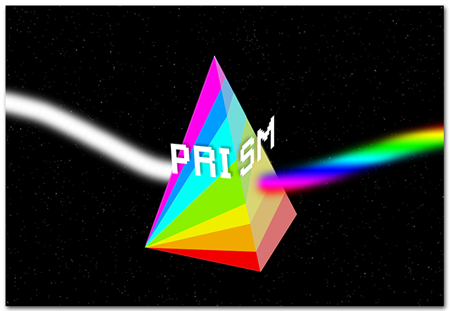
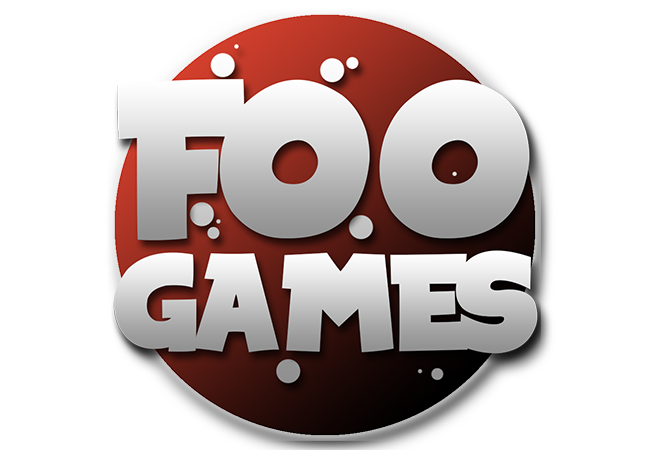
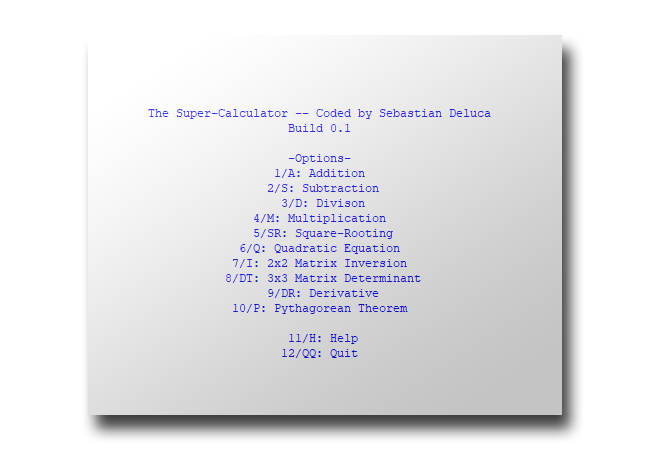
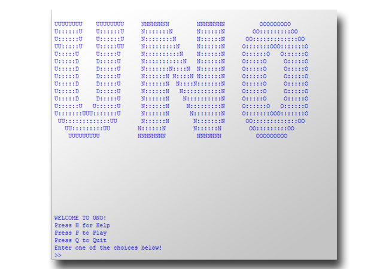
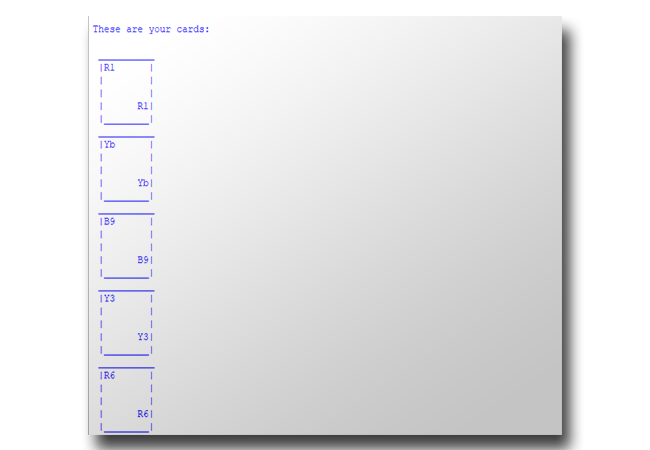

Over the last few years, I've amassed quite a few projects-- some solo ventures, others group efforts... all of them a joy to create.
Here's a list of my favourite projects. Click on one to view more info.
The crowned-jewel of my coding career thus far-- Prism is the amalgamation of everything I learned about the Python language, and was a real passion project for my friends and I to create. Prism has some spectacular features such as weather simulation, save-games, a 2.5D perspective, all-original artwork I hand-created, an easy-to-use GUI and more!
Lost in an arcade at night, 7 Year Old Dylan Park finds refuge in playing the few arcade machines left running overnight. To his surprise, these games seem to light up the arcade, and could maybe even light up his path of escape. In Prism, play as Dylan in his quest to get home and return to Mom before the night comes to an end.
Prism is downloadable off of my GitHub, as well as the Foo Games site.
For Prism, I handled the creation of the games' art, Conjured up a majority of the ideas for features, as well as helmed the story development. I volunteered to lead the development of the 'Main Hub' as well as 2 of the 4 inner games.
This egotistically-named python-based calculator is/was a personal project I created with the idea of a 'calculator that can solve advanced arithmetic'. I haven't recently been working on it due to school, but I am very proud of it.
I singlehandedly coded all of 'SuperCalculator'. It's a solo project.
A culminating assessment for Grade 11-- a python-based UNO card game featuring an ASCII-based UI. This was my first big project in Python, and was a collaborative effort with a friend of mine, Alden DeMello.
I solely developed the player-side of things, such as UI, gameplay, and the menus.
A Python-based Day Planner created as the Culminating Assessment for Grade 12.
Python Day Planner utilized many of Python's capabilities, such as File I/O, Recursion, & Exception Handling.
I singlehandedly coded all of 'Python Day Planner'. It's a solo project.
How to get in touch!
Email: sebdeluca.contact@gmail.com
GitHub:/sebastiandeluca
LinkedIn:Sebastian Deluca